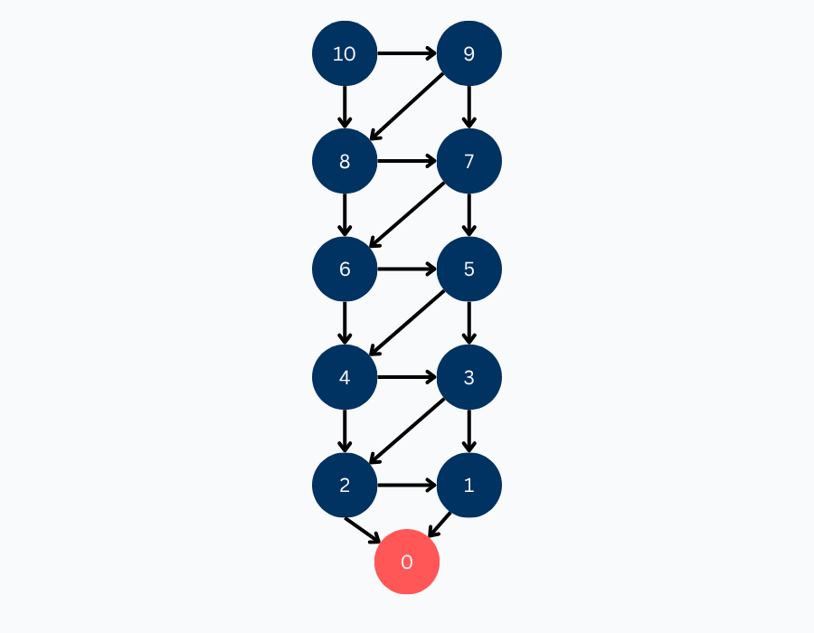
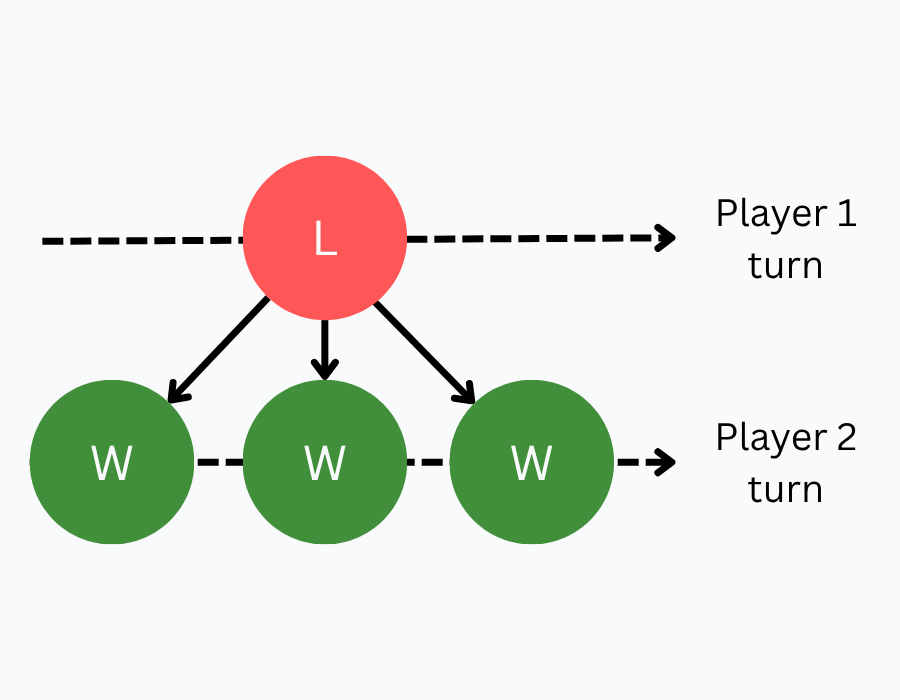
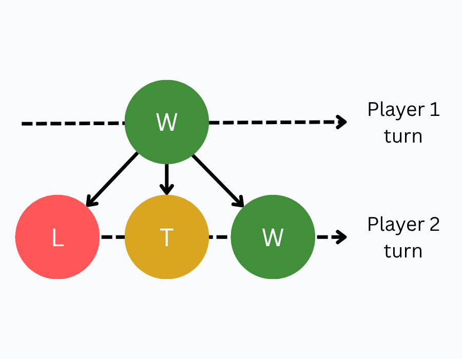
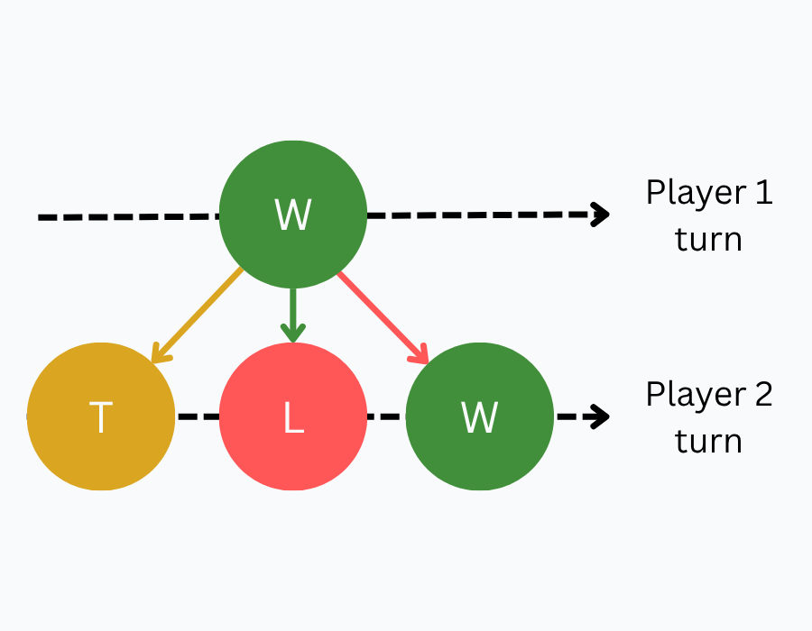

Position Values
Now that we understand game trees, we can start solving games! Our goal is to assign values to each position. These values tell us whether moving to that position leads to a win, loss, or tie if both players play perfectly. Don't worry if this sounds confusing right now. We'll break it down by solving a small game!
10-to-0-by-1-or-2
Imagine you are playing this game with a friend: There are 10 pennies in front of both of you. You can each remove either 1 or 2 pennies from the pile on your turn. The goal is to not be the player who reaches 0.
Play the game on the GamesCrafters website below to get a feel for it! In this game, you are trying to force your opponent to reach 10 instead of 0.
Constructing the Game Tree
Based on these rules, we can construct the game tree! For now, let us ignore win and lose conditions. The positions (vertices) are the different possible counts between 0 and 1 and the moves (edges) are subtracting either 1 or 2 from the current count.
Let's start with the starting position when the count is 10. From here, there are two moves we can make:
- You can take away 1, which will take us to a count of 9
- You can take away 2, which will take us to a count of 8

We can repeat this for every position in our game (count 0 to 10). Notice that when the game position has a count of 1, there is only one outgoing edge, since there is only one valid move (subtract 1) you can make from this position. In this game tree, our starting position 10 is our single source vertex and the primitive position 0 is our only leaf node. Every arrow either represents subtracting one or subtracting two.

Position & Move Values
Formally, the value of a position is "the outcome of the game for the player whose turn it is, assuming perfect play" (Cheung, 2023). Although we haven't yet formally defined the notion of perfect play, we can already deduce the value of primitive positions from this definition alone.
Primitive Position Values
At a primitive position, you can no longer make any moves from the given state (no outgoing edges). In 10-to-0-by-1-or-2, reaching the state with a count of 0 means you have lost the game, so we assign this position the value 'LOSE'.
Let's imagine we start with 0 items. Whoever plays first will immediately lose, since they have no valid moves. This means that whoever is at this position loses, so we assign it a LOSE value. In this case, the only primitive position is a losing one, but primitive positions can also be winning or tying.
We will be using the following to refer to and represent position values:
- Positions with a value of 'WIN' will be referred to as winning positions. These positions will be colored green in the game tree.
- Positions with a value of 'TIE' will be referred to as tying positions. These positions will be colored yellow in the game tree.
- Positions with a value of 'LOSE' will be referred to as losing positions. These positions will be colored red in the game tree.
Let's color the primitive position 0 red, since it is a losing position.

How Values Are Assigned
To assign values to the other positions, we need to make some assumptions. We assume that both players play perfectly, meaning they always make the best possible move available to them. Since winning isn't always possible, we assume that players prefer outcomes in the following order: WIN > TIE > DRAW > LOSE. We also need to consider that as we move through the game tree, the turn alternates between players. We consider the perspective of the player whose turn it is.
Losing Positions
A position is a losing position (LOSE) if all of its children are winning positions (WIN). Remember that turns alternate. When you make a move, you put your opponent in one of the child positions. If all the child positions of your current position are winning ones, your opponent can always win if they play perfectly. Therefore, you are in a losing position.

Winning Positions
A position is a winning position (WIN) if at least one of its children is a losing position (LOSE). If you can make a move that puts your opponent in a losing position, you can guarantee a win for yourself. You are playing perfectly, so, if there is at least one path to victory, you will take it. Therefore, you are in a winning position.

Tying Positions
A position is a tying position (TIE) if at least one of its children is a tying position (TIE), and none of its children are losing positions (LOSE). If there is at least one losing position among the children, you would take that move and be in a winning position. You prefer tying over losing, so if there is at least one path to a tie and no paths to victory, you will take it. Therefore, you are in a tying position.
Move Value
Just like positions, moves also have a value and are determined by the value of the position where the move leads. Using the same traffic light convention we define:
- A winning move (move with a value of 'WIN') is a move which gives the other player a losing position
- A losing move (move with a value of 'LOSE') is a move which gives the other player a winning position
- A tying/draw move (move with a value of 'TIE' or 'DRAW') is a move which gives the other player a tying or drawing position, respectively

We are now ready to solve our first game!
Summary
In this chapter, we covered the following:
- A position is a losing position (LOSE) if all of its children are winning positions (WIN)
- A position is a winning position (WIN) if at least one of its children is a losing position (LOSE)
- A position is a tying position (TIE) if at least one of its children is a tying position (TIE), and none of its children are losing positions (LOSE)
- Move values are determined by the value of the position where the move leads
Practice Questions
Test your understanding of position values with the questions below. Click an answer to check it.